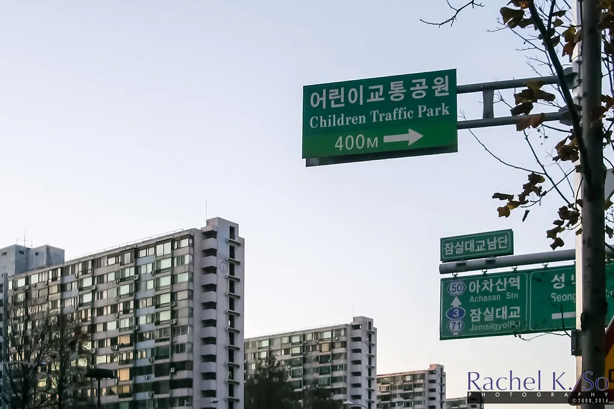

한은 "집값·가계대출 다시 꿈틀"…금융취약성지수 9분기 연속 상승
한국은행이 집값과 가계대출이 다시 꿈틀거리고 있다며 금융불균형 누증 경고음을 냈다. 한은은 지난 22일 발표한 9월 금융안정보고서에서 금융취약성지수(FVI)가 9분기 연속 상승해 올해 2분기 기준 46.5를 기록했다고 밝혔다. 이는 2008년 1분기부터 이어져 온 장기평균 수준에 도달한 수치로, 금융시스템 전반의 잠재 위험이 누적되고 있다는 의미로 풀이된다. 한은은 이번 보고서를 반기마다 발표해 온 만큼 이번 지표 변화에 각별한 무게를 실었다.
보고서에 따르면 부동산시장은 수도권 중·저가 주택을 중심으로 가격 상승세를 이어갔다. 전국 주택매매가격은 지난해 6월 이후 15개월 연속 오름세를 보이고 있는 것으로 나타났다. 금리 인상기에도 불구하고 주택 가격 상승 흐름이 좀처럼 꺾이지 않고 있다는 의미로, 한은은 이런 흐름이 가계부채 증가와 서로 맞물려 있다고 진단했다. 특히 서울과 수도권 일부 지역의 매수 심리가 다시 살아나고 있다는 점도 짚었다.
가계대출 역시 증가 압력이 지속되고 있는 것으로 파악됐다. 한은은 그동안의 금리 인상이 금융불균형을 일부 완화하는 효과를 냈다고 평가하면서도, 취약차주와 중소기업의 연체는 오히려 가속화하고 있다고 진단했다. 금리 인상에 따른 부담이 차주 계층별로 다르게 나타나고 있다는 뜻으로, 상환 능력이 취약한 차주일수록 어려움이 더 커지고 있는 셈이다. 소득 하위 계층의 이자 부담 증가 속도도 상대적으로 빠른 것으로 나타났다.
구체적으로 취약차주 비중은 6.7%에서 6.8%로 0.1%포인트 늘었고, 잠재 취약차주 비중은 18%대를 그대로 유지한 것으로 집계됐다. 특히 취약차주의 연체율은 과거 금리 인상기보다 높은 수준을 나타내, 상환 여력이 상대적으로 약해졌다는 분석이 뒤따랐다. 한은은 이런 흐름이 자영업자와 중소기업 대출에서도 비슷하게 나타나고 있다고 덧붙이며, 관련 지표를 지속적으로 모니터링하겠다고 밝혔다.

한은은 금리 상승에 따른 이자 부담과 신용위험이 시차를 두고 커지는 구조라는 점을 재차 강조했다. 특히 취약가계와 중소기업에는 그 영향이 더 빠르게 나타날 수 있다며 각별한 경계가 필요하다고 밝혔다. 이번 보고서는 금융불안지수 역시 "주의" 단계로 올라섰다고 평가하며, 금융회사와 시장 참가자들의 리스크 관리 필요성을 함께 언급했다.
한은은 비은행권의 리스크도 함께 점검해야 한다고 짚었다. 저축은행과 상호금융 등 비은행 예금취급기관의 부동산 관련 익스포저가 여전히 높은 수준이어서, 부동산 경기 변동에 따른 연쇄 위험을 경계해야 한다는 것이다. 아울러 비은행권의 자본 완충력을 지속적으로 점검하고, 필요할 경우 건전성 규제를 보완하겠다는 방침도 함께 밝혔다.
시장에서는 이번 보고서가 한은의 향후 통화정책 운용에 어떤 신호로 작용할지에 관심이 쏠리고 있다. 가계부채발 금융 불안 우려와 물가·성장 여건을 함께 고려해야 하는 만큼, 다음 금융통화위원회에서 한은이 어떤 판단을 내놓을지에 이목이 집중된다. 정부 부처들도 이번 보고서를 토대로 가계부채 관리 대책을 재점검할 것으로 전망되며, 주택공급 정책과의 조율 여부도 관심사로 떠올랐다.